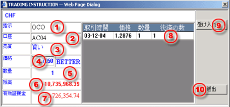

One Cancel Otherの注文
決済目的でお客様が指値注文及び逆指値の２つのオーダーを同時に出した場合に、１つのオーダーが成立すると１つのオーダーが自動的に取り消されます。OCOとは複数の注文を同時に入れ、一方の注文が執行されれば、2つ目又は代替の注文が取消しされる。（1つが成立するともう一つのオーダーは取消しされる方式です）。OCOは同一ポジションの決済に対して同一枚数となります。
お客様が最初のオーダー情報要求した際に、お客様は取引指令画面(OCO). OCOボタンをマウスでクリックすることにより２回目の注文を執行することが出来ます。
Oco表示された時に、お客様は画面上に次の情報データを入力して下さい。| 1 | 種類 - ocoオーダー |
 OCO
Order processing dialogue |
| 2 | 口座 - 選択不可。初回注文と同一です。 | |
| 3 | 売買 - 選択不可 初回注文と同一です。 | |
| 4 | 価格 - 取引の価格を入力します。 | |
| 5 | ロット（通貨１，０００単位） - 選択不可 初回注文と同一です。 | |
| 6 | 残高 - 取り引き口座の証拠金残高 | |
| 7 | 維持証拠金 - 選んだ口座の資本金額 | |
| 8 | 閉じる - 修正することができない。それはその双方向性の最初オーダーと同じ数量です。 | |
| 9 | 受ける/決断（F8） - 取引デスクへ成約した注文を受けるボタン | |
| 10 | 退去 - 取引指令画面から退去するボタン |
ゆーざーｈ取引デスクへ最後の決断を下す前、オーダー確認画面にそのオーダーした取引の正確さを確認が可能である。
その二つのocoオーダーに関して、同じ参考コードで示され、しかもそのoco オーダー手続き完成されて取引デスクに受け入れられたら、ワーキング注文パネルに不明と言う表示を示される。いかなる理由にもかかわらず、その不明の表示は注文したものが成約できた。またはキャンセルという表示がしめされない限り。そのまま不明の表示が残されるのです。もし会社の指示された実行条件すべて作動完成できたら、ディラーは後ほどその注文情況を確認し、ユーザーに確認サインや実行するための注文コードを与えるのです。それによって注文情況はのち程成約したと変る
注意事項